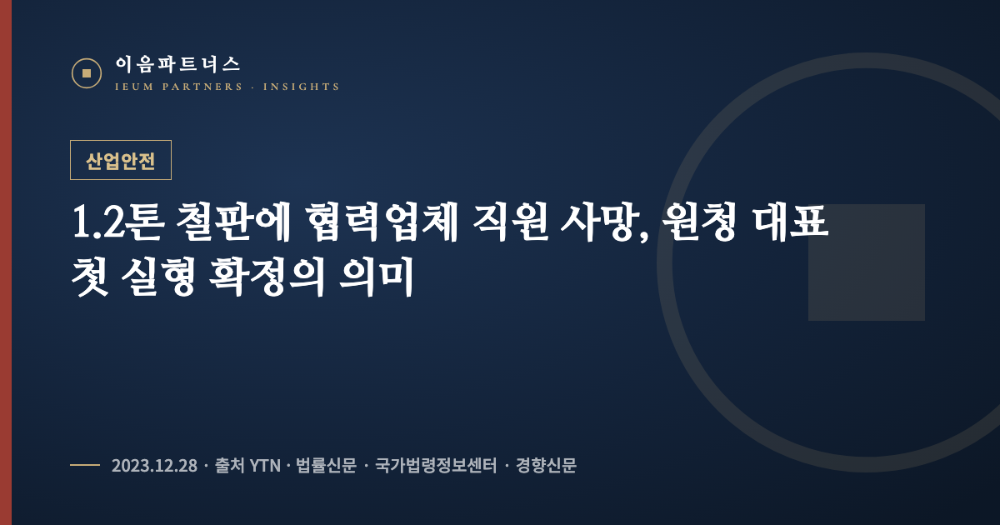

1.2톤 철판에 협력업체 직원 사망, 원청 대표 첫 실형 확정의 의미

협력업체에 일을 맡겼으니 그 직원들의 안전도 협력업체 몫이라고 생각하는 대표님이 적지 않습니다. 2023년 12월 28일 대법원은 협력업체 직원이 숨진 사고로 원청 대표에게 중대재해처벌법 위반 실형을 처음 확정했습니다. 이 글에서는 사건 내용과 판결의 의미, 지금 확인할 점을 정리합니다.
이 판결은 중대재해처벌법에 대한 대법원의 첫 판단이라 이후 재판의 기준점이 됐습니다. 이듬해 2024년 1월 27일부터는 50명 미만 사업장에도 법이 적용되고 있어, 작은 회사도 같은 기준으로 판단받습니다(국가법령정보센터). 우리 회사 협력업체 관리가 걱정되신다면 카카오톡 채널 이음파트너스로 편하게 물어 주세요.
어떤 사고였나
2022년 3월 경남 함안의 한 제강 공장에서 협력업체 소속 60대 작업자가 방열판 보수 작업 중 크레인에서 떨어진 1.2톤짜리 철판에 깔려 숨졌습니다(법률신문). 철판을 매단 낡은 섬유 벨트가 해져 끊어진 것이 원인이었고, 작업계획서 한 장 없을 만큼 안전 대책이 부족했습니다(YTN).
판결은 어떻게 이어졌나
| 구분 | 내용 |
|---|---|
| 1심(2023년 4월) | 원청 대표 징역 1년·법정 구속, 법인 벌금 1억 원 |
| 항소심(2023년 8월 23일) | 항소 기각, 1심 유지 |
| 대법원(2023년 12월 28일) | 상고 기각, 원청 대표 첫 실형 확정(2023도12316) |
대표는 법 시행 직후라 준비할 시간이 부족했다고 주장했지만, 법원은 이 사업장에서 사망 사고가 처음이 아니었고 여러 차례 산업안전보건법 위반으로 처벌받은 전력, 입법 뒤 유예 기간이 상당했다는 점을 들어 받아들이지 않았습니다. 당시 1심 선고가 난 12건이 모두 유죄였지만 대부분 집행유예였던 점을 보면 이례적인 결과였습니다.
대법원은 검찰이 산업안전보건법 위반을 따로 더해 무겁게 처벌해 달라고 한 부분은 받아들이지 않았습니다. 한 행위가 여러 죄에 해당하면 가장 무거운 죄의 형으로 처벌하는 상상적 경합으로 본 것입니다. 대법원 공보연구관은 근로자가 산재로 숨지면 사업주는 “형이 더 무거운 중대재해처벌법에 정한 형으로 처벌받게 됩니다”라고 설명했습니다(YTN). 형량은 법정 하한인 징역 1년이었습니다.
지금 이 판결을 다시 보는 이유
이 판결 뒤 2025년 9월에는 1년이 안 되는 사이 3명이 숨진 조선업체 전 대표에게 두 번째 실형이 확정됐습니다(경향신문). 두 사건 모두 하청 노동자가 원청 사업장에서 숨진 사고였습니다. 협력업체 직원이라도 원청이 관리하는 현장에서 일한다면, 원청 대표가 안전 체계를 갖췄는지가 재판의 중심이 됩니다.
대표님이 지금 확인할 것
- 크레인 벨트나 와이어처럼 닳는 장비의 교체 주기와 점검 기록이 있는지
- 무거운 물건을 다루는 작업 전에 작업계획서를 쓰고 현장에서 지키는지
- 우리 사업장에서 일하는 협력업체 작업도 원청의 안전 점검 범위에 들어가 있는지
참고한 자료
- 원청대표 '중대재해법 실형' 첫 확정...향후 영향은? — YTN (2023.12.28)
- [판결] '중대재해법' 첫 실형 한OO강 대표, 항소심도 징역형 — 법률신문 (2023.08.23)
- 대법원 2023. 12. 28. 선고 2023도12316 판결 — 국가법령정보센터 (2023.12.28)
- 1년도 안 돼 3명 사망···삼OOO씨 전 대표 ‘중대재해법 위반’ 실형 확정 2호 — 경향신문 (2025.09.26)
- 중대재해 처벌 등에 관한 법률 — 국가법령정보센터 (현행 법령)
협력업체와 함께 일하는 사업장의 안전 점검 범위가 궁금하시다면 카카오톡 채널 이음파트너스에서 함께 정리해 보실 수 있습니다.
※ 이 글은 일반적인 정보 제공을 위한 것으로, 개별 사안은 세무사·노무사 등 전문가와 함께 확인하시기 바랍니다.